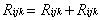

4.7 DRY DEPOSITION
The
dry deposition rate is computed using a total resistance (Rijk)
as shown in Equation 63. The total resistance, the inverse of the deposition
velocity, is computed at each point as the sum of atmospheric and surface
resistances:

(62)
where
Raijk = atmospheric resistance (s/m)
Rsijk= surface resistance (s/m) for wind speed (i), stability
class (j), and contaminant (k).
The atmospheric resistance represents the resistance for the transfer of
a contaminant in the atmospheric layer to the ground surface. The atmospheric
resistance varies with the wind speed, stability, and upwind surface roughness
using micrometeorological relationships (Paulson 1970; Businger et al.
1971; Golder 1972). The surface resistance is a function of the surface
roughness and the properties of the materials. For particulate matter,
the gravitational term is included in the empirical curves used to define
the resistances (Sehmel and Hodgson 1978).
Dry deposition is based on the computed near-surface
air concentrations given in Equation 48 using
(63)
where
Rijk = dry-deposition resistance (s/m) for wind speed (i), stability class (j),
and contaminant (k)
t/ = time period for deposition (s).
A mass budget approach is used to compute the net Gaussian plume source
depletion fractions (i.e., parameter d in Equation 49) for dry deposition.
Although these removal rates are applied as a source depletion model (see
Equation 48) such as the one given in Slade (1968), the surface depletion
effects documented by Horst (1984) are accounted for in the MEPAS dry deposition
model by the atmospheric resistances. The approach computes deposition
resistances for each wind speed/stability class over a layer that is deep
enough so that corrections for near-surface concentration depletion are
unnecessary. The thickness of this layer is assumed to be 10 m. The computation
of the atmospheric resistance term is based on assuming empirical shapes
of micrometeorological profiles. The atmospheric resistance varies with
stability, wind speed, and local surface roughness.